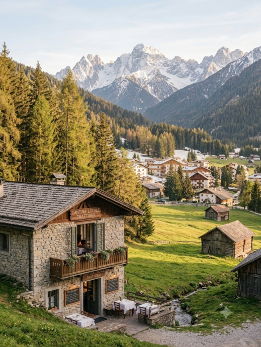
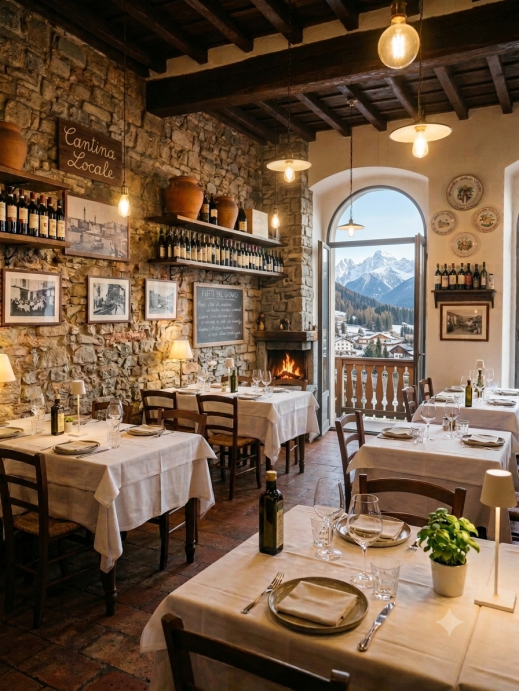
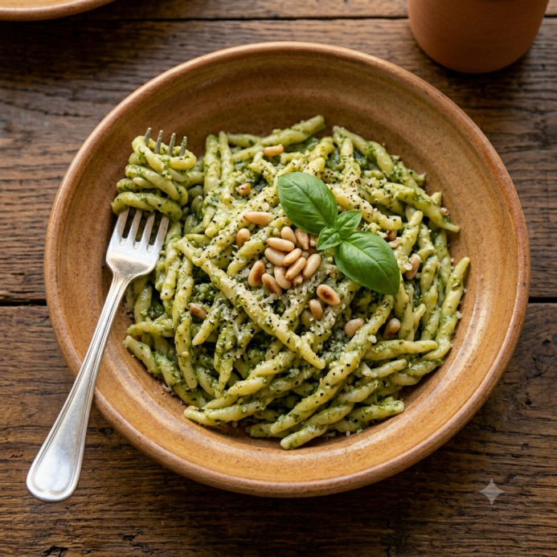
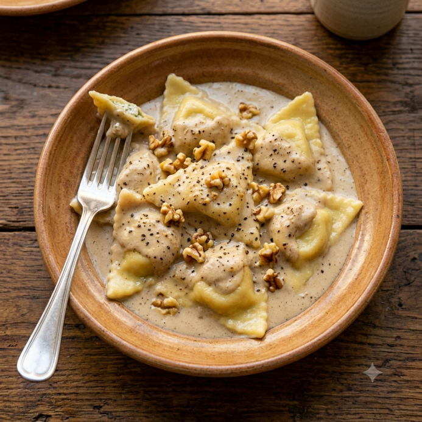
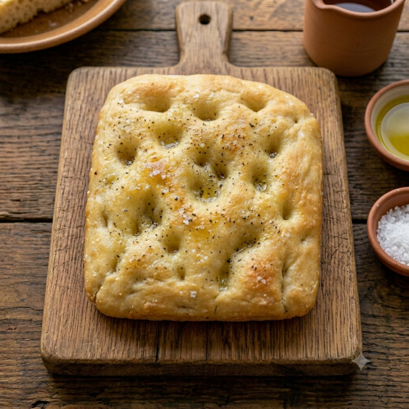

TRATTORIA
A RÉVA
GENOVA DAL 1956
~
Genova
nel piatto,
dal 1956.
Cucina ligure autentica, ingredienti del territorio e ricette tramandate con amore.
SCOPRI IL MENU

LA NOSTRA STORIA
Una storia
Una storia
lunga tre
generazioni.
Da oltre 90 anni custodiamo i sapori e i profumi della nostra terra, tramandando ricette di famiglia e amore per la buona cucina.
SCOPRI DI PIÙ
LA NOSTRA STORIA
Una tradizione che profuma di mare.
A Réva nasce nel cuore di Genova, tra i caruggi e il porto antico. Dal 1956 portiamo in tavola i sapori veri della Liguria, con semplicità, rispetto e passione.
SCOPRI DI PIÙ →
~
I PIATTI DELLA TRADI ZIONE

Trofie al Pesto
Il profumo della nostra Liguria
~
Pansoti in salsa di noci
Una ricetta antica, un sapore unico
~
Dolci e Bevande
Bevande, Dolci e Vini
~